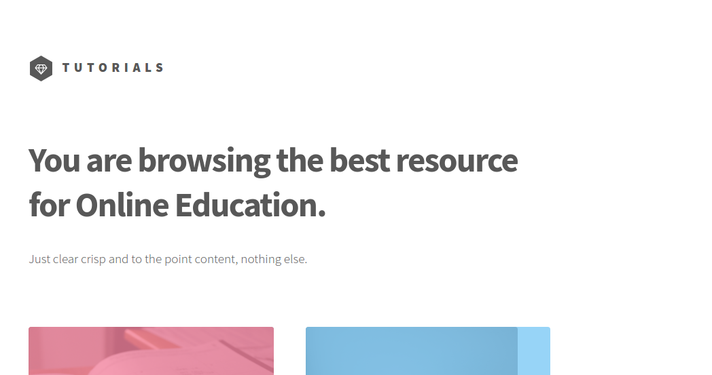

How to Build an Tutorials App Using Nuxt.Js

In this tutorial I'm going to show you how to create a "Tutorials Portfolio" app using a Nuxt.js, and Cosmic JS. For the sake of understanding how to consume Restful API’s, this tutorial will show how to make simple AJAX requests to the Cosmic JS API in order to retrieve, update, and delete data in our Cosmic JS buckets. Let's get started.
TL;DR
Download the GitHub repo.
Check out the demo.
Getting Started:
First, let’s make a new directory to build our project in and lets also make a package.json file.
mkdir cosmicapp-tutorialscosmicapp-tutorials$ touch package.json
Now, in your package.json, copy and paste the code below:
{
"name": "cosmicapp-tutorials",
"version": "1.0.0",
"description": "Nuxt.js project",
"author": "kutsaniuk@gmail.com",
"private": true,
"scripts": {
"dev": "NODE_ENV=development nuxt",
"build": "nuxt build",
"start": "npm run build; NODE_ENV=production HOST=0.0.0.0 nuxt start"
},
"dependencies": {
"axios": "^0.16.2",
"body-parser": "^1.17.2",
"cross-env": "^5.0.5",
"express": "^4.15.3",
"express-session": "^1.15.3",
"http": "0.0.0",
"nuxt": "^1.0.0-rc11",
"sha1": "^1.1.1",
"vue-notification": "^1.3.4"
},
"devDependencies": {
"babel-eslint": "^7.2.3",
"eslint": "^4.3.0",
"eslint-config-standard": "^10.2.1",
"eslint-loader": "^1.9.0",
"eslint-plugin-html": "^3.1.1",
"eslint-plugin-import": "^2.7.0",
"eslint-plugin-node": "^5.1.1",
"eslint-plugin-promise": "^3.5.0",
"eslint-plugin-standard": "^3.0.1"
}
}
Second, let’s make a nuxt.config.js file.
cosmicapp-tutorials$ touch nuxt.config.js
Now, in your nuxt.config.js, copy and paste the code below:
//cosmicapp-tutorials/nuxt.config.js
const bodyParser = require('body-parser')
const session = require('express-session')
module.exports = {
dev: (process.env.NODE_ENV !== 'production'),
head: {
title: 'cosmicapp-tutorials',
meta: [
{ charset: 'utf-8' },
{ name: 'viewport', content: 'width=device-width, initial-scale=1' },
{ hid: 'description', name: 'description', content: 'Nuxt.js project' }
],
link: [
{ rel: 'icon', type: 'image/x-icon', href: '/favicon.ico' }
]
},
loading: { color: '#585858' },
build: {
vendor: ['axios', 'vue-notification']
},
serverMiddleware: [
bodyParser.json(),
session({
secret: 'super-secret-key',
resave: true,
saveUninitialized: false,
cookie: { maxAge: 60000 }
}),
'~/api'
],
env: {
bucketSlug: process.env.BUCKET_SLUG || 'tutorials',
readKey: process.env.READ_KEY || 'anyI1DP1bxB5ivjCaJSRC0ZFxB5SJDpfYgrDfR47fw7HIlWYAX',
writeKey: process.env.WRITE_KEY || 'J72v1YeK8zZF6n0dI8yhiVTzQy75JASppAQe8XPykiJHW9ARfz'
}
}
Building our app:
Now we're going to build out our file structure a bit more so that we can organize our vue files. This is what our cosmicapp-tutorials directory should look like:
cosmicapp-tutorials
|----api
| |----index.js
|----assets
| |----css
| |----fonts
| |----images
| |----sass
|----layouts
| |----default.vue
|----middleware
| |----auth.js
|----pages
| |----add
| |----index.js
| |----articles
| |----_id.js
| |----blog
| |----index.js
| |----edit
| |----_id.js
| |----login
| |----index.js
| |----profile
| |----_id.js
| |----register
| |----index.js
| |----index.vue
|----static
|----store
|----nuxt.config.json
|----package.json
Now we we will set up our default.vue. Copy and paste the following code into your default.vue file:
<template>
<div v-bind:class="{ 'is-menu-visible': isMenuVisible}">
<div id="wrapper">
<header id="header">
<div class="inner">
<!-- Logo -->
<nuxt-link to="/" class="logo">
<span class="symbol"><img src="~/assets/images/logo.svg" alt=""/></span>
<span class="title">Tutorials</span>
</nuxt-link>
<pre v-bind="$store.state.authUser"></pre>
<!-- Nav -->
<nav @click="isMenuVisible = true">
<ul>
<li><a href="#menu">Menu</a></li>
</ul>
</nav>
</div>
</header>
<nuxt/>
<footer id="footer">
<div class="inner">
<ul class="copyright">
<li><img class="cosmic-logo" src="https://cosmicjs.com/images/logo.svg" width="20" height="20"><a href="https://cosmicjs.com/">Proudly powered by Cosmic JS</a></li><li>Copyright: <i class="fa fa-copyright"></i> Photography Portfolio App 2017</li>
</ul>
</div>
</footer>
</div>
<nav id="menu" @click="isMenuVisible = false">
<div class="inner">
<h2>Menu</h2>
<ul>
<li><nuxt-link to="/">Home</nuxt-link></li>
<li v-if="!$store.state.authUser"><nuxt-link to="/login">Login</nuxt-link></li>
<li v-if="!$store.state.authUser"><nuxt-link to="/register">Register</nuxt-link></li>
<li v-if="$store.state.authUser"><nuxt-link v-bind:to="'/profile/' + $store.state.authUser.user[0].value">Profile</nuxt-link></li>
<li v-if="$store.state.authUser"><a href="#" @click="logout()">Logout</a></li>
</ul>
</div>
<a class="close" @click="isMenuVisible = false" href="#menu">Close</a>
</nav>
</div>
</template>
<script>
export default {
data () {
return {
isMenuVisible: false
}
},
methods: {
async logout () {
await this.$store.dispatch('logout')
}
}
}
</script>
<style src="~/assets/css/main.css"></style>
After that we can create index.vue. Copy and paste the following code into your index.vue file:
<template>
<div id="main">
<div class="inner">
<header>
<h1>You are browsing the best resource <br>
for Online Education.</h1>
<p>Just clear crisp and to the point content, nothing else.</p>
</header>
<section class="tiles">
<article v-bind:class="'style' + (index + 1)" v-for="(article, index) in articles">
<span class="image">
<img v-if="article.metadata" :src="article.metadata.image.url" alt=""/>
</span>
<nuxt-link v-bind:to="'/articles/' + article.slug" class="logo">
<h2>{{article.title}}</h2>
<div class="content" v-html="article.content"></div>
</nuxt-link>
</article>
</section>
</div>
</div>
</template>
<script>
import axios from 'axios'
export default {
asyncData () {
return axios.get(`https://api.cosmicjs.com/v1/tutorials/object-type/articles?read_key=${process.env.readKey}`)
.then((res) => {
return { articles: res.data.objects }
})
},
head () {
return {
title: 'Tutorials'
}
}
}
</script>
Now we we will set up our store/index.vue. Copy and paste the following code into your store/index.vue file:
import axios from 'axios';
var sha1 = require('sha1');
export const state = () => ({
authUser: null
})
export const mutations = {
SET_USER: function (state, user) {
state.authUser = user
}
}
export const actions = {
// nuxtServerInit is called by Nuxt.js before server-rendering every page
nuxtServerInit ({ commit }, { req }) {
if (req.session && req.session.authUser) {
commit('SET_USER', req.session.authUser)
}
},
async login ({ commit }, { username, password }) {
axios.get('https://api.cosmicjs.com/v1/' + process.env.bucketSlug + '/object-type/users/search', {
params: {
metafield_key: 'username',
metafield_value_has: username,
limit: 1,
read_key: process.env.readKey
}
})
.then(function (response) {
if (response.data.status !== 'empty') {
axios.get('https://api.cosmicjs.com/v1/' + process.env.bucketSlug + '/object-type/users/search', {
params: {
metafield_key: 'password',
metafield_value: sha1(password),
limit: 1,
read_key: process.env.readKey
}
})
.then(function (response) {
if (response.data.status !== 'empty') {
axios.post('/api/saveSession', response.data.objects[0])
.then(function (response) {
commit('SET_USER', response.data);
window.location.href = '/profile/' + username;
});
}
})
}
})
},
async register ({ commit }, { username, password }) {
axios.post('https://api.cosmicjs.com/v1/' + process.env.bucketSlug + '/add-object', {
write_key: process.env.writeKey,
title: username,
type_slug: 'users',
slug: username,
metafields: [
{
key: "username",
type: "text",
value: username
},
{
key: "password",
type: "text",
value: sha1(password)
}
]
})
.then(function (response) {
axios.post('/api/saveSession', response.data.object)
.then(function (response) {
commit('SET_USER', response.data);
window.location.href = '/profile/' + username;
});
});
},
async logout ({ commit }) {
await axios.post('/api/logout')
window.location.href = '/login';
commit('SET_USER', null)
}
}
Now we we will set up our auth.js. Copy and paste the following code into your middleware/auth.vue file:
export default function ({ store, error }) {
if (!store.state.authUser) {
error({
message: 'You are not connected',
statusCode: 403
})
}
}
What's going on here:
- We created default layouts.
- We created store/index.js for login, register and sessions.
- We created middleware/auth.js for checking that user logged in.
Conclusion:
We were able to consume the Cosmic JS API with our actions and dispatcher functions. I hope you enjoyed this tutorial as much as I did, if you have any questions reach out to us on Twitter and join our community on Slack.